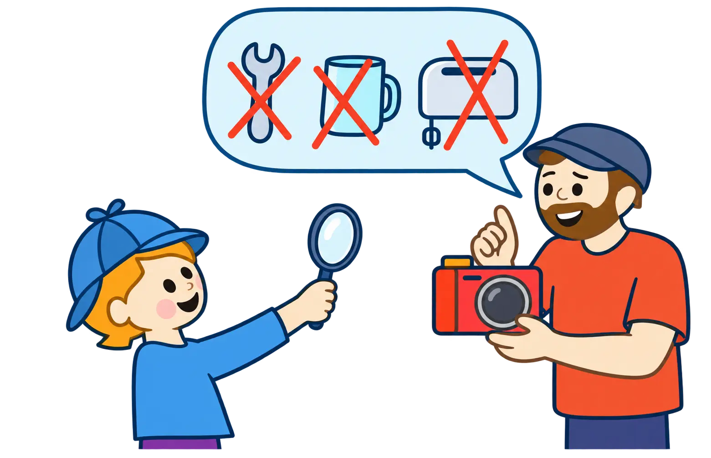

Anschauen · rätseln · fragen
Das komische Dingsda
Ein Erwachsener besucht eine Kindergruppe und bringt 2–3 „komische Dinge“ mit. Die Kinder rätseln in Teams, wofür sie sind, dürfen Fragen stellen (auch lustige!) – und hören dann die echte Geschichte aus dem Berufsalltag.

Ablauf (Beispiel 60–90 Minuten)
- Kurz kennenlernen (Mini-Interview: „Was wolltest du als Kind werden?“)
- Komisches Ding #1: Gruppenberatung → Fragen → Vermutungen
- Auflösung: Was ist es wirklich? Wofür braucht man es? Eine kleine Geschichte dazu
- Komisches Ding #2 (und ggf. #3): wiederholen
- Abschluss: „Was hat euch überrascht?“ / „Was würdet ihr noch gern wissen?“
Welche „Dinge“ eignen sich?
Sehr gut sind klassische Arbeitsgegenstände (Werkzeug, Material, Schutzkleidung). Aber auch Alltags- oder Symbol-Dinge sind willkommen: z. B. eine Brotdose, wenn das gemeinsame Essen das Schönste am Job ist. Wichtig ist nur: Der Gegenstand erzählt eine Geschichte.
🛠 Arbeitsding
Werkzeug, Materialprobe, Plan, Handschuh …
💛 Alltagsding
Kalender, Notizbuch, Brotdose, Kaffeebecher …
🌈 Symbol-Ding
Foto, Glücksbringer, kleines Modell – etwas, das „warum ich das mag“ zeigt.